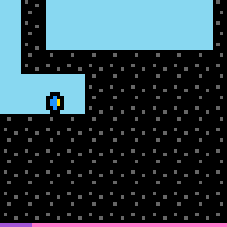

bp35
Move the player sideways, click to change terrain and gravity, and reach the pink cross to clear the level.
9 levels · 11 rules · all levels replayed in Lean
Replay
The certified run that cleared every level, one action at a time.

Press Play or step to load the run. Keys, while the player is on screen: ← → step, Space play / pause. A click is circled; cells that changed are outlined.
How it plays
Each level is a vertical shaft taller than the screen, and the camera follows the player. The player is one cell in the liquid, and its yellow nose points the way it faces. The left and right keys move it one cell sideways; vertically it cannot move by itself — after every step and every click it is carried all the way along the direction of gravity by the liquid. What can be clicked changes the terrain: the red switch flips gravity (floating up becomes sinking), the green rounded block turns into liquid when clicked, an orange block and an empty slot with a small cross swap when clicked, and when a purple foam block is clicked the liquid around it also turns into foam. The level is cleared when the player walks sideways into, or is carried into, the pink cross cell. When floating up the cross is below, and cannot be reached without flipping gravity. The undo key can step back one step at a time, and the step counter in the bottom row still grows.

Model
The final model: 3 object types and 11 rules. Each rule is a Python check against every recorded step; 10 of them are translated into Lean (the paper's per-game table). Code under a rule is the file of the same name in the agent's Lean project.
Object types
- Cells
cellsVisible grid: walls, liquid, rounded blocks, empty slots, crosses and the player's cell.Lean · World.lean
-- World.cells : List (List Tile) structure World where cells : List (List Tile) facing : Facing hud : Nat deriving DecidableEq, Repr, Inhabited - Facing
facingWhether the player's yellow nose points left or right.Lean · Facing.lean
-- World.facing : Facing inductive Facing where | l | r deriving DecidableEq, Repr, Inhabited - Step counter
hudThe bottom row, which records how many steps this level has taken.Lean · World.lean
-- World.hud : Nat structure World where cells : List (List Tile) facing : Facing hud : Nat deriving DecidableEq, Repr, Inhabited
Rules
sidewaysLeft or right steps into liquid or an empty slot and always turns the nose.Python
from __future__ import annotations from derive.board import passable from derive.window import at, col from objects import Facing from .. import _scope from .._common import load … FROM_BOOK = ["a3_left", "a4_right", "move_needs_floor"] def effect(w, act) -> int: c = col(w) if act.is_walk and passable(at(w, 0, c + act.dc)): return c + act.dc return c def turn(w, act): if act.kind == "LEFT": return Facing.L if act.kind == "RIGHT": return Facing.R return w.facing def scope_(prev, action, nxt, ctx=None): w, act, _ = load(prev, action, nxt, ctx) return _scope.ordinary(act, ctx) def assert_(prev, action, nxt, ctx=None): if scope_(prev, action, nxt, ctx): return "NA" w, act, nw = load(prev, action, nxt, ctx) return "TRUE" if (col(nw) == effect(w, act) and nw.facing is turn(w, act)) else "FALSE"Lean · Sideways.lean
import Obj.Level.State import Obj.Action.Act namespace Game def Act.dc : Act → Int | .left => -1 | .right => 1 | _ => 0 def sideways (m : Map) (r c : Int) (a : Act) : Int := if a.dc ≠ 0 ∧ (m.get r (c + a.dc)).passable = true then c + a.dc else c def turn (f : Facing) : Act → Facing | .left => .l | .right => .r | _ => f end GamedriftAfter each step, gravity carries the player through liquid and empty slots until blocked.Python
from __future__ import annotations from derive.board import passable, shift from derive.window import at, col from objects import Tile from .. import _scope from .._common import load … … FROM_BOOK = ["rise_scrolls", "rests_against_solid", "walk_keeps_upper_board", "player_row6"] def run(w, pre): from .._step import tile_after step = pre.grav.step k = 0 while True: t = tile_after(w, pre, step * (k + 1), pre.col) if t is None: return "out", k if t is Tile.GOAL: return "goal", k + 1 if not passable(t): return "stop", k k += 1 def scope_(prev, action, nxt, ctx=None): w, act, nw = load(prev, action, nxt, ctx) r = _scope.ordinary(act, ctx) if r: return r from .._step import pre_drift if pre_drift(w, act).into_goal: … if shift(w, nw) is None: return _scope.NO_SHIFT return None def assert_(prev, action, nxt, ctx=None): if scope_(prev, action, nxt, ctx): return "NA" from .._step import pre_drift w, act, nw = load(prev, action, nxt, ctx) pre = pre_drift(w, act) how, k = run(w, pre) d = shift(w, nw) if how == "goal": return "FALSE" if how == "stop": return "TRUE" if d == pre.grav.step * k else "FALSE" if d * pre.grav.step < k: return "FALSE" stop = at(nw, pre.grav.step, col(nw)) return "TRUE" if stop is not None and not passable(stop) and stop is not Tile.GOAL else "FALSE"Lean · Drift.lean
import Obj.Level.State namespace Game inductive Drift where | stop (r : Int) | goal | unknown deriving DecidableEq, Repr def driftFrom (m : Map) (c d : Int) : Nat → Int → Drift | 0, _ => .unknown | n + 1, r => match m.get (r + d) c with | .goal => .goal | .unk => .unknown | t => if t.passable = true then driftFrom m c d n (r + d) else .stop r def drift (m : Map) (r c : Int) (g : Grav) : Drift := driftFrom m c g.dir (m.length + 1) r end GamegravityClicking the red switch flips gravity; nothing else flips it.Python
from __future__ import annotations from derive.window import at, grav from objects import Tile from .. import _scope from .._common import load … FROM_BOOK = ["a6_block8_flips_pull", "phase_tracks_pull"] def effect(w, act): if act.kind == "CLICK" and at(w, act.dr, act.col) is Tile.SWITCH: return grav(w).flipped() return grav(w) def scope_(prev, action, nxt, ctx=None): w, act, _ = load(prev, action, nxt, ctx) return _scope.ordinary(act, ctx) def assert_(prev, action, nxt, ctx=None): if scope_(prev, action, nxt, ctx): return "NA" w, act, nw = load(prev, action, nxt, ctx) return "TRUE" if grav(nw) is effect(w, act) else "FALSE"Lean · Gravity.lean
import Obj.Board.Tile import Obj.Player.Gravity namespace Game def gravAfter (g : Grav) (t : Tile) : Grav := if t = .switch then g.flip else g end GameopensClicking a green block, red switch or purple foam turns that cell into liquid permanently.Python
from __future__ import annotations from derive.board import shift from derive.window import at from objects import Tile from .. import _scope from .._common import load DOORS = (Tile.SHELL, Tile.SWITCH, Tile.FOAM) … … FROM_BOOK = ["a6_opens_tile", "a6_block8_flips_pull", "a6_block8_redraws"] def effect(w, act) -> dict: if act.kind == "CLICK" and at(w, act.dr, act.col) in DOORS: return {(act.dr, act.col): Tile.LIQUID} return {} def scope_(prev, action, nxt, ctx=None): w, act, nw = load(prev, action, nxt, ctx) if not effect(w, act): … r = _scope.ordinary(act, ctx) if r: return r d = shift(w, nw) if d is None: return _scope.NO_SHIFT got = at(nw, act.dr - d, act.col) if got is None: … if got is Tile.HIDDEN: … return None def assert_(prev, action, nxt, ctx=None): if scope_(prev, action, nxt, ctx): return "NA" w, act, nw = load(prev, action, nxt, ctx) want = effect(w, act)[(act.dr, act.col)] return "TRUE" if at(nw, act.dr - shift(w, nw), act.col) is want else "FALSE"Lean · Opens.lean
import Obj.Board.Tile namespace Game def opens : Tile → Option Tile | .shell => some .liquid | .switch => some .liquid | .foam => some .liquid | _ => none end Gameslot_toggleClicking swaps an empty slot and an orange block; two clicks restore the cell.Python
from __future__ import annotations from derive.board import shift from derive.window import at from objects import Tile from .. import _scope from .._common import load SWAP = {Tile.SLOT: Tile.BLOCK, Tile.BLOCK: Tile.SLOT} … … FROM_BOOK = ["a6_places_block", "a6_opens_block12"] def effect(w, act) -> dict: if act.kind == "CLICK": t = at(w, act.dr, act.col) if t in SWAP: return {(act.dr, act.col): SWAP[t]} return {} def scope_(prev, action, nxt, ctx=None): w, act, nw = load(prev, action, nxt, ctx) if not effect(w, act): … r = _scope.ordinary(act, ctx) if r: return r d = shift(w, nw) if d is None: return _scope.NO_SHIFT got = at(nw, act.dr - d, act.col) if got is None: … if got is Tile.HIDDEN: … return None def assert_(prev, action, nxt, ctx=None): if scope_(prev, action, nxt, ctx): return "NA" w, act, nw = load(prev, action, nxt, ctx) want = next(iter(effect(w, act).values())) return "TRUE" if at(nw, act.dr - shift(w, nw), act.col) is want else "FALSE"Lean · SlotToggle.lean
import Obj.Board.Tile namespace Game def toggle : Tile → Option Tile | .slot => some .block | .block => some .slot | _ => none end Gamefoam_spreadsClicking foam turns liquid in the four neighbouring cells into foam, except the player's.Python
from __future__ import annotations from derive.board import passable, shift from derive.window import at, col from objects import Tile from .. import _scope from .._common import load NEIGH = ((-1, 0), (1, 0), (0, -1), (0, 1)) … FROM_BOOK = [] def effect(w, act) -> dict: if act.kind != "CLICK" or at(w, act.dr, act.col) is not Tile.FOAM: return {} out = {} for a, b in NEIGH: p = (act.dr + a, act.col + b) if at(w, *p) is Tile.LIQUID: out[p] = Tile.FOAM return out def scope_(prev, action, nxt, ctx=None): w, act, nw = load(prev, action, nxt, ctx) if act.kind != "CLICK" or at(w, act.dr, act.col) is not Tile.FOAM: … r = _scope.ordinary(act, ctx) if r: return r if shift(w, nw) is None: return _scope.NO_SHIFT return None def assert_(prev, action, nxt, ctx=None): if scope_(prev, action, nxt, ctx): return "NA" w, act, nw = load(prev, action, nxt, ctx) d = shift(w, nw) seen = 0 for (dr, c), want in effect(w, act).items(): got = at(nw, dr - d, c) if got is None or got is Tile.HIDDEN: continue seen += 1 if got is not want: return "FALSE" here = (0, col(w)) if abs(here[0] - act.dr) + abs(here[1] - act.col) == 1: got = at(nw, -d, here[1]) if got is not None and got is not Tile.HIDDEN: seen += 1 if not passable(got): return "FALSE" return "TRUE" if seen else "NA"Lean · FoamSpreads.lean
import Obj.Level.State namespace Game def spreadOne (m : Map) (pr pc r c : Int) : Map := if r = pr ∧ c = pc then m else if m.get r c = .liquid then m.set r c .foam else m def spread (m : Map) (pr pc r c : Int) : Map := spreadOne (spreadOne (spreadOne (spreadOne m pr pc (r - 1) c) pr pc (r + 1) c) pr pc r (c - 1)) pr pc r (c + 1) end Gamegoal_winsThe level advances exactly when the player walks or is carried into the cross.Python
from __future__ import annotations from .. import _scope from .._common import load, won … FROM_BOOK = ["goal_cross_wins", "goal_reached_vertically"] def predicted(w, act) -> bool | None: from .._step import pre_drift … pre = pre_drift(w, act) if pre.into_goal: return True how, _ = run(w, pre) if how == "out": return None return how == "goal" def scope_(prev, action, nxt, ctx=None): w, act, _ = load(prev, action, nxt, ctx) if act.kind == "UNDO": return _scope.UNDO if won(ctx) is None: return _scope.NO_CTX if predicted(w, act) is None: … return None def assert_(prev, action, nxt, ctx=None): if scope_(prev, action, nxt, ctx): return "NA" w, act, _ = load(prev, action, nxt, ctx) return "TRUE" if won(ctx) == predicted(w, act) else "FALSE"Lean · GoalWins.lean
import Obj.Level.State import Rule.Move.Sideways namespace Game def isGoal (s : State) : Bool := s.map.get s.r s.c == .goal def walksIntoGoal (m : Map) (r c : Int) (a : Act) : Bool := a.dc != 0 && m.get r (c + a.dc) == .goal end Gamehud_tickEvery action adds one to the step counter; a new level starts from zero.Python
from __future__ import annotations from .._common import load, won … FROM_BOOK = ["hud_tick"] def scope_(prev, action, nxt, ctx=None): if won(ctx) is None: … return None def assert_(prev, action, nxt, ctx=None): if scope_(prev, action, nxt, ctx): return "NA" w, _, nw = load(prev, action, nxt, ctx) fresh = won(ctx) and ctx.get("state_next") != "WIN" want = 0 if fresh else w.hud + 1 return "TRUE" if nw.hud == want else "FALSE"Lean · Tick.lean
import Obj.Level.State namespace Game def tick (h : Nat) : Nat := h + 1 end Gameboard_persistsOnly the clicked cell's terrain changes, plus its neighbours for foam; derived from other rules.Python
from __future__ import annotations from derive.board import overlap, shift from .. import _scope from .._common import load … FROM_BOOK = ["walk_keeps_upper_board", "a6_inert_elsewhere"] def scope_(prev, action, nxt, ctx=None): w, act, nw = load(prev, action, nxt, ctx) r = _scope.ordinary(act, ctx) if r: return r if shift(w, nw) is None: return _scope.NO_SHIFT return None def assert_(prev, action, nxt, ctx=None): if scope_(prev, action, nxt, ctx): return "NA" from .._step import pre_drift w, act, nw = load(prev, action, nxt, ctx) touched = pre_drift(w, act).changes d = shift(w, nw) for dr, c, a, b in overlap(w, nw, d): if (dr, c) in touched: continue if a is not b: return "FALSE" return "TRUE"Lean · BoardPersists.lean
import Obj.Level.State import Step open Game theorem persists_walk (s s' : State) (a : Act) (ha : a = .left ∨ a = .right ∨ a = .gap) (h : step s a = .ok s') : s'.map = s.map := by rcases ha with rfl | rfl | rfl <;> · simp only [step] at h split at h · cases h · split at h · cases h · cases h · cases h; rfl theorem persists_click (s s' : State) (dr c : Int) (h : step s (.click dr c) = .ok s') (r' c' : Int) (h0 : ¬ (r' = s.r + dr ∧ c' = c)) (h1 : ¬ (r' = s.r + dr - 1 ∧ c' = c)) (h2 : ¬ (r' = s.r + dr + 1 ∧ c' = c)) (h3 : ¬ (r' = s.r + dr ∧ c' = c - 1)) (h4 : ¬ (r' = s.r + dr ∧ c' = c + 1)) : s'.map.get r' c' = s.map.get r' c' := by have setAt_ne : ∀ (l : List Tile) (n k : Nat) (v d : Tile), k ≠ n → (setAt l n v).getD k d = l.getD k d := by intro l induction l with | nil => intro n k v d _; simp [setAt] | cons x xs ih => intro n k v d hk cases n with | zero => cases k with | zero => exact absurd rfl hk | succ k => simp [setAt] | succ n => cases k with | zero => simp [setAt] | succ k => simp only [setAt, List.getD_cons_succ]; exact ih n k v d (by omega) have modAt_ne : ∀ (l : List (List Tile)) (n k : Nat) (f : List Tile → List Tile) (d : List Tile), k ≠ n → (modAt l n f).getD k d = l.getD k d := by intro l induction l with | nil => intro n k f d _; simp [modAt] | cons x xs ih => intro n k f d hk cases n with | zero => cases k with | zero => exact absurd rfl hk | succ k => simp [modAt] | succ n => cases k with | zero => simp [modAt] | succ k => simp only [modAt, List.getD_cons_succ]; exact ih n k f d (by omega) have modAt_same : ∀ (l : List (List Tile)) (n : Nat) (f : List Tile → List Tile), f [] = [] → (modAt l n f).getD n [] = f (l.getD n []) := by intro l induction l with | nil => intro n f hf; simp [modAt, hf] | cons x xs ih => intro n f hf cases n with | zero => simp [modAt] | succ n => simp only [modAt, List.getD_cons_succ]; exact ih n f hf have setKeep : ∀ (m : Map) (r c r' c' : Int) (t : Tile), ¬ (r' = r ∧ c' = c) → (m.set r c t).get r' c' = m.get r' c' := by intro m r c r' c' t hne unfold Map.set by_cases hneg : r < 0 ∨ c < 0 · simp [hneg] · simp only [hneg, ite_false] unfold Map.get by_cases hneg' : r' < 0 ∨ c' < 0 · simp [hneg'] · simp only [hneg', ite_false] by_cases hr : r'.toNat = r.toNat · rw [hr, modAt_same _ _ _ (by simp [setAt])] have hc : c'.toNat ≠ c.toNat := by intro hc; apply hne; constructor <;> omega exact setAt_ne _ _ _ _ _ hc · rw [modAt_ne _ _ _ _ _ hr] have spreadKeep : ∀ (m : Map) (pr pc r c r' c' : Int), ¬ (r' = r ∧ c' = c) → (spreadOne m pr pc r c).get r' c' = m.get r' c' := by intro m pr pc r c r' c' hne unfold spreadOne split · rfl · split · exact setKeep m r c r' c' _ hne · rfl have hm : s'.map = clickAt s.map s.r s.c (s.r + dr) c := by simp only [step] at h split at h · cases h · split at h · cases h · cases h · cases h; rfl rw [hm] unfold clickAt split · rfl · split · split · unfold spread rw [spreadKeep _ _ _ _ _ _ _ h4, spreadKeep _ _ _ _ _ _ _ h3, spreadKeep _ _ _ _ _ _ _ h2, spreadKeep _ _ _ _ _ _ _ h1, setKeep _ _ _ _ _ _ h0] · exact setKeep _ _ _ _ _ _ h0 · split · exact setKeep _ _ _ _ _ _ h0 · rflblocked_no_switchWhile floating up without clicking the switch, the player cannot reach a cross below.Python
from __future__ import annotations from derive.window import at, grav, rows from objects import NCOL, Grav, Tile from .._common import load, won … … FROM_BOOK = ["blocked_up_no_block8"] def scope_(prev, action, nxt, ctx=None): w, act, _ = load(prev, action, nxt, ctx) if act.kind == "UNDO": … if won(ctx) is None: … if grav(w) is not Grav.UP: … if act.kind == "CLICK" and at(w, act.dr, act.col) is Tile.SWITCH: … goals = [dr for dr in rows(w) for c in range(NCOL) if at(w, dr, c) is Tile.GOAL] if not goals: … if min(goals) <= 0: … return None def assert_(prev, action, nxt, ctx=None): if scope_(prev, action, nxt, ctx): return "NA" return "FALSE" if won(ctx) else "TRUE"Lean · BlockedNoSwitch.lean
import Obj.Level.State import Step open Game theorem up_goal_below_no_win (s : State) (a : Act) (hg : s.g = .up) (hsw : ∀ dr c, a = .click dr c → s.map.get (s.r + dr) c ≠ .switch) (hgoal : ∀ r' c', r' ≤ s.r → s.map.get r' c' ≠ .goal) : step s a ≠ .won := by have setAt_mem : ∀ (l : List Tile) (n k : Nat) (v d : Tile), (setAt l n v).getD k d = v ∨ (setAt l n v).getD k d = l.getD k d := by intro l induction l with | nil => intro n k v d; right; simp [setAt] | cons x xs ih => intro n k v d cases n with | zero => cases k with | zero => left; simp [setAt] | succ k => right; simp [setAt] | succ n => cases k with | zero => right; simp [setAt] | succ k => simp only [setAt, List.getD_cons_succ]; exact ih n k v d have modAt_mem : ∀ (l : List (List Tile)) (n k : Nat) (f : List Tile → List Tile), (modAt l n f).getD k [] = f (l.getD k []) ∨ (modAt l n f).getD k [] = l.getD k [] := by intro l induction l with | nil => intro n k f; right; simp [modAt] | cons x xs ih => intro n k f cases n with | zero => cases k with | zero => left; simp [modAt] | succ k => right; simp [modAt] | succ n => cases k with | zero => right; simp [modAt] | succ k => simp only [modAt, List.getD_cons_succ]; exact ih n k f have setNoGoal : ∀ (m : Map) (r c r' c' : Int) (t : Tile), t ≠ .goal → (m.set r c t).get r' c' = .goal → m.get r' c' = .goal := by intro m r c r' c' t ht h unfold Map.set at h by_cases hneg : r < 0 ∨ c < 0 · simpa [hneg] using h · simp only [hneg, ite_false] at h unfold Map.get at h ⊢ by_cases hneg' : r' < 0 ∨ c' < 0 · simp [hneg'] at h · simp only [hneg', ite_false] at h ⊢ rcases modAt_mem m r.toNat r'.toNat (fun row => setAt row c.toNat t) with h1 | h1 · rw [h1] at h rcases setAt_mem (m.getD r'.toNat []) c.toNat c'.toNat t .unk with h2 | h2 · rw [h2] at h; exact absurd h ht · rw [h2] at h; exact h · rw [h1] at h; exact h have spreadOneNoGoal : ∀ (m : Map) (pr pc r c r' c' : Int), (spreadOne m pr pc r c).get r' c' = .goal → m.get r' c' = .goal := by intro m pr pc r c r' c' h unfold spreadOne at h split at h · exact h · split at h · exact setNoGoal m r c r' c' .foam (by decide) h · exact h have clickNoGoal : ∀ (m : Map) (pr pc r c r' c' : Int), (clickAt m pr pc r c).get r' c' = .goal → m.get r' c' = .goal := by intro m pr pc r c r' c' h unfold clickAt at h split at h · exact h · split at h · rename_i t ht have htg : t ≠ .goal := by intro e; subst e revert ht; cases m.get r c <;> simp [opens] split at h · unfold spread at h exact setNoGoal _ _ _ _ _ _ htg (spreadOneNoGoal _ _ _ _ _ _ _ (spreadOneNoGoal _ _ _ _ _ _ _ (spreadOneNoGoal _ _ _ _ _ _ _ (spreadOneNoGoal _ _ _ _ _ _ _ h)))) · exact setNoGoal _ _ _ _ _ _ htg h · split at h · rename_i t ht have htg : t ≠ .goal := by intro e; subst e revert ht; cases m.get r c <;> simp [toggle] exact setNoGoal _ _ _ _ _ _ htg h · exact h have preNoGoal : ∀ r' c', r' ≤ s.r → (preMap s a).get r' c' ≠ .goal := by intro r' c' hr hgl cases a with | click dr c => exact hgoal r' c' hr (clickNoGoal _ _ _ _ _ _ _ hgl) | left => exact hgoal r' c' hr hgl | right => exact hgoal r' c' hr hgl | undo => exact hgoal r' c' hr hgl | gap => exact hgoal r' c' hr hgl have preUp : preGrav s a = .up := by cases a with | click dr c => simp only [preGrav] split · exact hg · unfold gravAfter have := hsw dr c rfl simp [this, hg] | _ => simp [preGrav, hg] have driftNoGoal : ∀ (m : Map) (c : Int) (fuel : Nat) (r : Int), (∀ r' c', r' ≤ s.r → m.get r' c' ≠ .goal) → r ≤ s.r → driftFrom m c (-1) fuel r ≠ .goal := by intro m c fuel induction fuel with | zero => intro r _ _; simp [driftFrom] | succ n ih => intro r hm hr simp only [driftFrom] have hng := hm (r + -1) c (by omega) split · rename_i heq; exact absurd heq hng · simp · split · exact ih (r + -1) hm (by omega) · simp have noWalk : walksIntoGoal s.map s.r s.c a = false := by unfold walksIntoGoal have := hgoal s.r (s.c + a.dc) (Int.le_refl _) simp [this] cases a with | undo => simp [step] | _ => simp only [step, noWalk, Bool.false_eq_true, ↓reduceIte] intro h split at h · rename_i hd rw [preUp] at hd exact driftNoGoal _ _ _ _ preNoGoal (Int.le_refl _) hd · cases h · cases hundo_popsUndo restores terrain, position, facing and gravity one action back; the step counter keeps growing.Python onlyPython
from __future__ import annotations from .._common import load, won, world_of … FROM_BOOK = ["a7_undo_no_levelup"] def target(ctx): stack = [] for frame, action in (ctx or {}).get("past") or []: if action.upper().startswith("ACTION7"): if stack: stack.pop() else: stack.append(frame) return stack[-1] if stack else None def scope_(prev, action, nxt, ctx=None): if not action.upper().startswith("ACTION7"): … if not ctx or "past" not in ctx: … if target(ctx) is None: … return None def assert_(prev, action, nxt, ctx=None): if scope_(prev, action, nxt, ctx): return "NA" _, _, nw = load(prev, action, nxt, ctx) back = world_of(target(ctx)) if won(ctx): return "FALSE" return "TRUE" if (nw.cells == back.cells and nw.facing is back.facing) else "FALSE"
Code is shown with comments and the agent's notes removed; the files as written are in the archive under Check it yourself.
Proof
For every level, Lean starts from the level's first screen, applies the model's rules to the certified actions, and checks that every computed state agrees with the recorded frame on the components the model represents, and that the last one wins. Each theorem is closed by the Lean kernel and is a statement about the learned model.
Every level can be won
theorem L0_winnable : ∃ as : List Act, stepWins (L0_start : State) as = true := …theorem L1_winnable : ∃ as : List Act, stepWins (L1_start : State) as = true := …theorem L2_winnable : ∃ as : List Act, stepWins (L2_start : State) as = true := …theorem L3_winnable : ∃ as : List Act, stepWins (L3_start : State) as = true := …theorem L4_winnable : ∃ as : List Act, stepWins (L4_start : State) as = true := …theorem L5_winnable : ∃ as : List Act, stepWins (L5_start : State) as = true := …theorem L6_winnable : ∃ as : List Act, stepWins (L6_start : State) as = true := …theorem L7_winnable : ∃ as : List Act, stepWins (L7_start : State) as = true := …theorem L8_winnable : ∃ as : List Act, stepWins (L8_start : State) as = true := …Statements only; the proofs and the full Lean project are in the archive, with the steps to re-run them, under Check it yourself.
Check it yourself
Everything on this page comes from files you can download and check. The archive holds the agent's files: the recorded run, the concept book, the concept sources, the Lean project and the sealed model file, plus the record of our kernel check.
Download bp35.zip 0.6 MB · 57 files
Re-run the proof
Before you start: our run of this check took 50 s and 4.3 GB of memory at its peak (2026-10-23).
- Download bp35.zip and unpack it. The model and its theorems are in
archive/bp35-20260920/formal/Game.lean. Before changing it, check that its SHA-256 isf455a788e565472fb9c00365f49c608e80bbd8df7b4a5124683eb852fe17130d - Install Lean with elan, then the version named in the archive's
lean-toolchain:elan toolchain install leanprover/lean4:v4.34.0 - Copy the model file to
Check.leanand append these two lines to the copy:#print axioms consistent #print axioms faithful - In the folder that holds
Check.lean, run:lean +leanprover/lean4:v4.34.0 -M60000 Check.lean - Lean should finish without errors and print:
The first line is printed by the file itself: for each rule, how many recorded transitions meet its condition.GUARD_HITS move_left=223,move_right=279,gd_move=317,rise_after_move=425,step_ticks=1422,action7_is_undo=27,click_clears_block=136,click_toggles_cyan=70,click_switch_consumes=82,flip_gravity=553,spikeblock_splits_cross=137,click_ceiling_block_lifts_one=66,spike_kills=882,spike_kills_falling=317,switch_tile_blocks_walk=6,tide_rises_and_kills=1416,levelup_iff_goal=1416 'consistent' depends on axioms: [propext] 'faithful' depends on axioms: [propext]
What a pass establishes
consistent: for every recorded transition, as read by the agent's parser and with duplicates removed, every rule whose condition holds also has its effect hold. faithful: the certified run, recomputed step by step from the first screen of each level, matches the record and ends in a win. Axioms used: propext, all among Lean's standard ones.
What it does not establish: that the parser reads the screens correctly (that step runs in Python, outside Lean), or that a rule whose condition never occurs in the record is right. The Python file that produced the readings inside the model file is in the archive at meta/repair-20260928/lib/bp35-20260920/_lib.py.